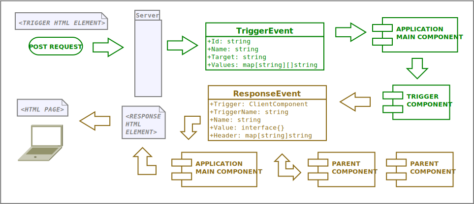
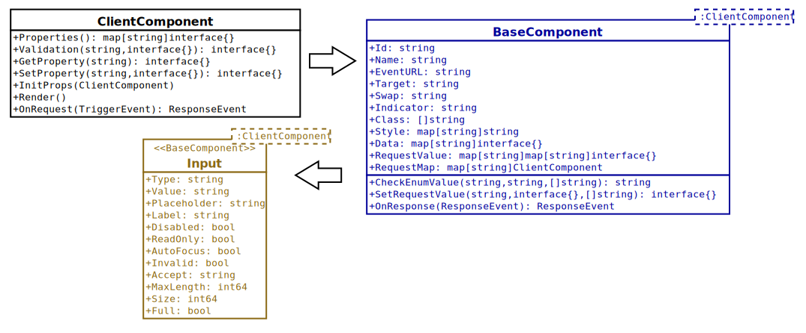

An easy way to create a server-side component in any programming language
By definition, component-based development is an approach to software development that focuses on the design and development of reusable components. The essence of isolated component development is exactly the same as the logic of industrial production based on standardized raw materials and components. Component developers create components that perform general or specific sub-tasks, from which any application can then be assembled. The components can operate in an isolated, sandboxed environment and are often independent of the business logic of the final use. The given component must be able to receive specific parameters, have an expected mode of operation, and its output events are also defined.
All components made in this way are fully tested, documented in a standard way, and can be easily reused in any application. Developer resource management is also an important aspect, because these components can be made in parallel as desired, independently of the specific applications.
The approach first became dominant in client-side application development for technical reasons. However, the advantages of the solution can also be used in server-side programming, and the possibilities of server-side technology offer even additional advantages.
The development of a client-side
application and component takes place in a very complex ecosystem.
An average node_modules size can be hundreds of MB and contain
hundreds or even over a thousand different packages. Each of these
also means external dependencies of varying quality and reliability,
which is also a big security risk. In addition, the constant
updating and tracking of these different packages and the dozens of
frameworks and technologies based on them requires a lot of
resources.
Server-side components have little or no
external dependencies. The components can be easily
created within the technical capabilities of a specific server-side
language. Their maintenance needs are limited to their actual code,
which is very small and much safer due to the lack of large external
dependencies.
The language of client-side
components is basically Javascript, but most server-side languages
are much more efficient and safer programming languages. JavaScript
is originally an add-on to html code and browsers, which was
originally created to increase the efficiency of the user interface
and not to develop the codebase of complex programs.
During development, it is possible to partially replace it with, for
example, the Typescript language, but this also means additional
dependencies and an increase in the complexity of the development
ecosystem, the end result of which will still be a Javascript
codebase. This practically means that a code written in a
programming language is translated into the code of another
language, and the content to be displayed is created during its
execution. In the process, there are many intermediate steps, used
resources, error possibilities, security risks and
uncertainties.
With the server-side components, it is possible
to simply write the program code in an easy-to-use and
safe language, the end result of which is the html
content to be displayed.
Client-side components usually communicate with the server
using a JSON-based REST API and receive the data to be displayed.
This also means that the data retrieval must adapt to the data
structure of the REST API. In other words, the database data must
first be converted to this structure, and then reprocessed on the
client side for final display. In addition to possible changes to
the data structure, this also means JSON encoding and decoding in
all cases.
The server-side components can
directly access the database and use the data
immediately in the data structure to be displayed. This also means
faster rendering and better resource management
for the server-side components.
Reducing the complexity and dependencies of program development means a shorter development time and the creation of products of better quality and lower cost.
Traditional server-side applications send complete HTML pages to browsers for display. Each response from the server replaces the entire screen. However, the components are organized based on a different logic. These are hierarchically organized, logically independent html code parts. Components are able to independently react and process user interactions and notify other processing components of the processing results. The entire page is not replaced or reloaded in the browser, only the required parts of the application.
This is not a problem for client-side components, because the component state data is stored locally and the components are regenerated within the browser. Unfortunately, this principle of operation cannot be implemented with HTTP standard requests at the moment.
Fortunately, there is a great program library that implements exactly the functionality required for component communication. Htmx is small (~14k), dependency-free, browser-oriented javascript library that allows you to access modern browser features directly from HTML, rather than using javascript. Yes, in a funny way, we can currently get to the Javascript-free world with the help of a Javascript library. :-)
The server-side components use only a small part of the possibilities of htmx. With the help of the function library, we are able to send POST requests with any html element, and replace the HTML code fragment returned as a response anywhere on the page without reloading the page.
The components of the source code for the description are implemented in Go, but the same logic can be implemented in any other server-side programming language. These components are not frameworks, they only use Go’s built-in packages and have no external dependencies. A library of components whose elements can be freely combined with each other and easily developed further. It’s actually just a code implementation proposal that anyone can easily use to create a server-side component in any programming language.
A component element of the HTML code sends a POST request with optional URL-encoded form data to the server
The server creates a TriggerEvent object by processing the header and form data of the request. The TriggerEvent contains the id and name attributes of the sending HTML element, the identifier of the response’s target element, and the form data.
The server creates the main component of the Application component and loads the state data from memory or file or database storage based on the session ID of the request. Passes the TriggerEvent object to the OnRequest function of the main component for processing.
Based on their identifiers, the main component can access all the elements of the component’s hierarchy, not just its direct child components. The main component passes the TriggerEvent object to the OnRequest function of its child component.
The trigger component processes the data received in the TriggerEvent and modifies its own state if necessary. Creates a ResponseEvent object that contains itself, the name of the component and the event, and any event response data. If the component has an OnResponse function, it passes the ResponseEvent object to the parent component for further processing, otherwise it returns it as a response to the main component.
Based on the name of the event, the parent component processes the data of the ResponseEvent object and modifies its own state, if necessary. Creates a new ResponseEvent object that contains itself, the name of the component, and the new name of the event, along with the new data for the response to the event. If the parent component has an OnResponse function, it passes the ResponseEvent object to its own parent component for further processing, otherwise it returns it as a response to the main component.
The main component creates the component HTML code of the last ResponseEvent object returned with the changed states. The returned component can be the original destination component or the HTML code of any parent component up to and including the main component. But the result of the processing can be the HTML code of any other component in the application, such as a Toast component that displays an error message. It may also contain other instructions to the browser, such as redirecting the client page with or without reloading the page.
The basis of the components is a data-driven template, which contains the rules of their appearance and behavior. The components use the declarative template from the text/template package in the go standard library. In traditional server-side programming, the same package is the basis for generating the html code displayed on the client side.
The main difference is that templates do not contain the rules of entire pages or certain parts of them, but the generated independent small html code fragments are organized based on a different logic. These hierarchically organized, logically independent html code parts are able to independently react and process user interactions and notify other components of the processing results. React’s JSX or Lit’s declarative template works on the same principle, but the same logic can be implemented in any other server-side programming language’s template package with similar functionality.
All components have their own properties that determine their current state and based on which the component’s Render function generates the HTML code. Each component has a Render function and a few other similar mandatory functions that can be used to safely query and set all properties of the component.
The ClientComponent interface contains the mandatory functions that are available in all components, and each component is also of the ClientComponent type in addition to its own type. The BaseComponent type is likewise a ClientComponent, which, in addition to the mandatory functions of the interface, also contains properties and functions that all components based on it inherit and can use if necessary.
The easiest way to create a new component is to add new properties and functions to the BaseComponent and override the functions of the ClientComponent interface if necessary. The Application component is a top-level element to which all other components belong. This element is completely never replaced, only some of its parts can change. Its task is to load and manage all static elements required for the operation and display of the components, such as style sheets and the htmx package.
The logic of the components can be understood most easily from the code of the existing components. The source code repository contains sample code for ~15 server-side components, from the basic input component to the complex component.
The NumberInput component, for example, is a simple elemental component that directly receives events from the client interface via OnRequest. It validates and stores the new value received in TriggerEvent, then returns it directly in the ResponseEvent event or transmits its new state to the parent component via the OnResponse function.
Login and Locale are complex components that do not receive their own OnRequest event, but receive the processed events of the client interface through their child components. In addition to the mandatory functions of ClientComponent, they also have their own functions (for example, getComponent, response, msg) with which they initialize their own child components and handle the ResponseEvent events of the components.
The css files of the components are included in the static package. The index.css contains the reference to the style sheets of all components, so it is sufficient to specify this in the Application HeadLink property. The styles of the new components can be specified in additional css files and the styles of the existing components can also be overwritten.
The demo application displays all components with their test data. Applications can store component state in memory, but they can save it anywhere in json format and load it back. The demo application can store session data in memory and as session files. The source code of the example application also contains an example of using a session database (sqlite3, postgres, mysql, mssql). If you want to use a database session, uncomment before importing the database driver you want to use.
The source code of the components and the demo application can be found here: Nervatura server-side Go components